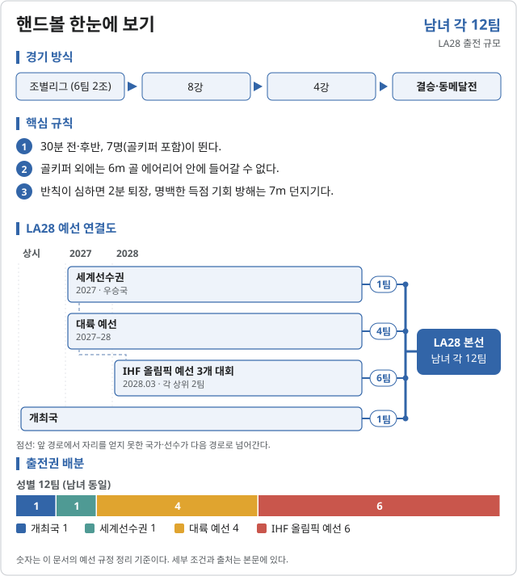
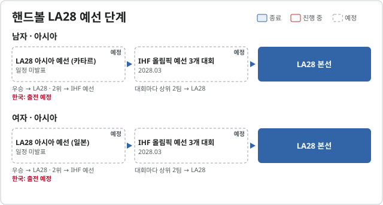
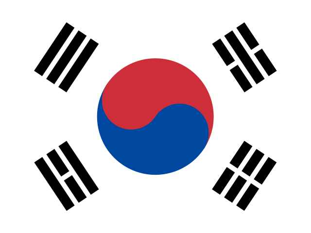

핸드볼 (Handball)

LA28 출전 확정 2026-11-06 기준
| 국가 | 경로 | 비고 |
|---|---|---|
| 개최국 | 남녀 각 1팀 |
LA28 예선 단계 2026.10.31 기준


| 단계 | 시기 | 상태 | 다음 단계 | 결과·진출 | 한국 |
|---|---|---|---|---|---|
| 2026 아시안게임 (예선 아님) | 2026.09 | 종료 | 올림픽 자리 없음 |  대한민국 KOR 4위 | 4위 (준결승 카타르에 30-32) |
| LA28 아시아 예선 (카타르) | 일정 미발표 | 예정 | 우승 → LA28 · 2위 → IHF 예선 | 출전 예정 | |
| IHF 올림픽 예선 3개 대회 | 2028.03 | 예정 | 대회마다 상위 2팀 → LA28 |
| 단계 | 시기 | 상태 | 다음 단계 | 결과·진출 | 한국 |
|---|---|---|---|---|---|
| 2026 아시안게임 (예선 아님) | 2026.09 | 종료 | 올림픽 자리 없음 | 대한민국 KOR 금, | 금메달 (6전 전승, 일본 27-23) |
| LA28 아시아 예선 (일본) | 일정 미발표 | 예정 | 우승 → LA28 · 2위 → IHF 예선 | 출전 예정 | |
| IHF 올림픽 예선 3개 대회 | 2028.03 | 예정 | 대회마다 상위 2팀 → LA28 |
세계선수권 우승팀 1팀도 바로 LA28에 간다 (남자 2027.01 독일, 여자 2027.12).
2026 주요 대회 결과 2026-11-06 21:12 KST
위키백과 대회 문서에서 자동으로 모은다. 대회 중에는 한 시간마다 새로 읽는다. 한국 선수가 있는 줄은 붉게 칠했다. 하계 실시간 전체 →
아이치·나고야 아시안게임 아이치·나고야 · 09.19~09.29 종료 결과 2/2종목 · 한국 금1 은0 동0
| 종목 | 금 | 은 | 동 |
|---|---|---|---|
| Medalists | |||
| 남자 | BHR (16명) | ||
| 여자 | 대한민국 (16명) | ||
메달 순위: BHR 1-0-0 · 대한민국 1-0-0 ·  일본 0-1-1 ·
일본 0-1-1 ·  카타르 0-1-0 ·
카타르 0-1-0 ·  중국 0-0-1
중국 0-0-1
출처: 위키백과 Handball at the 2026 Asian Games · 2026-11-06 21:10 읽음
예선 규정
공통 규정
본선에는 12팀이 출전한다. 개최국 1팀, 세계선수권 1팀, 대륙별 예선 4팀, IHF 올림픽 예선 토너먼트 6팀으로 구성된다.
남녀 모두 아시아에 배정된 본선 출전권은 1팀이다.
아시아 예선
| 구분 | 남자 | 여자 |
|---|---|---|
| 대회 | LA28 남자 아시아 올림픽 예선 | LA28 여자 아시아 올림픽 예선 |
| 개최국 | 카타르 | 일본 |
| 일정 | 세부 일정 미정 | 세부 일정 미정 |
| 올림픽 직행 | 아시아 예선 1위 1팀 | 아시아 예선 1위 1팀 |
| 참가국·조 편성·경기 일정 | 원문에 공개 자료 없음 | 원문에 공개 자료 없음 |
| 대한민국 경기·최종 순위 | 대회 자료 발표 전 | 대회 자료 발표 전 |
IHF 올림픽 예선 토너먼트
IHF 올림픽 예선 토너먼트 6팀은 4팀씩 3개 토너먼트에서 가린다. 각 토너먼트 상위 2팀이 본선에 오른다.
2024 파리 올림픽 남자 예선의 배정 결과는 다음과 같다. 순위는 세계선수권·대륙 예선 등 출처 경로를 함께 적었다.
| 남자 | 토너먼트 #1 | 토너먼트 #2 | 토너먼트 #3 |
|---|---|---|---|
| 1 | 3위 (세계) · 스페인 | 5위 (세계) · 독일 | 6위 (세계) · 노르웨이 |
| 2 | 10위 (세계) · 슬로베니아 | 9위 (세계) · 크로아티아 | 8위 (세계) · 헝가리 |
| 3 | 2위 (아시아) · 바레인 | 2위 (아프리카) · 알제리 | 7위 (유럽) · 포르투갈 |
| 4 | 2위 (아메리카) · 브라질 | 8위 (유럽) · 오스트리아 | 3위 (아프리카) · 튀니지 |
여자 토너먼트 배정 결과는 아직 확인하지 못했다.
남녀 쿼터와 참가 자격
- 남녀 각각 168명: 일반 쿼터 154명(11팀 × 14명), 개최국 쿼터 14명(1팀). NOC당 성별 1팀까지 참가하며, 보편성 쿼터는 없다.
- 팀마다 예비 선수(AP) 3명을 둘 수 있다.
- 첫 경기일까지 만 16세 이상이어야 한다.
- 올림픽 헌장 제41조(국적), 제43조(반도핑·경기 조작 방지)와 IOC 참가 조건을 충족해야 한다. IOC 여성 카테고리 보호 정책과 IHF 선수 자격·국가 간 이적 규정을 적용한다.
중복 자격과 재배정
- 개최국이 세계선수권에서 우승하면 그 세계선수권의 차순위 국가에 출전권을 배정한다.
- 개최국 쿼터를 쓰지 않으면, 해당 성별 2027 세계선수권 우승 대륙의 대륙 예선에서 출전권을 얻지 못한 최상위 국가에 재배정한다.
예선 일정
| 일정 | 대회·기한 |
|---|---|
| 2026.07.31 | 개최국 쿼터 사용 확인 기한 |
| 2026.12.03–20 | 여자 유럽선수권 (대륙 예선 겸용) |
| 2027.01.13–31 | 남자 세계선수권 · 독일 |
| 미정 | 남자 아시아 예선 · 카타르 / 여자 아시아 예선 · 일본 / 여자 아프리카 예선 · 앙골라 |
| 2027.07.16–08.01 | 리마 팬아메리칸게임 · 남녀 아메리카 예선 |
| 2027.12.01–19 | 여자 세계선수권 · 헝가리 |
| 2028.01.13–30 | 남자 유럽선수권 |
| 2028년 1월 | 남자 아프리카선수권 · 이집트 |
| 2028.02.28–03.05 | 여자 IHF 올림픽 예선 토너먼트 |
| 2028.04.03–09 | 남자 IHF 올림픽 예선 토너먼트 |
| 2028.06.26 | LA28 스포츠 엔트리 마감 |
직전 올림픽 메달리스트
2024 파리 올림픽 · 위키백과 원문
| 세부종목 | 금 | 은 | 동 |
|---|---|---|---|
| 남자 | 덴마크 | 독일 | 스페인 |
| 여자 | 노르웨이 | 프랑스 | 덴마크 |
대한민국
2028 LA 올림픽 핸드볼 대한민국 확보 쿼터: 미정. 아시아 예선 결과 발표 후 갱신한다.
각주
- LA28 핸드볼 예선 규정 및 일정 (IHF·IOC 자료, 확인 기준 미기재)
- 2024 파리 올림픽 핸드볼 결과 (위키백과)